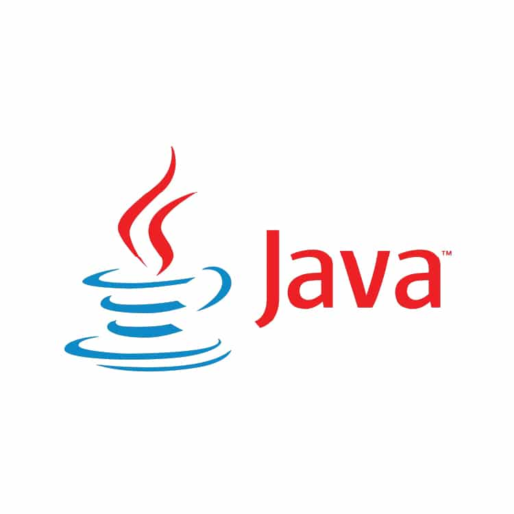

<

A linguagem C# (lê-se “cêsharp”) foi criada juntamente com a arquitetura da plataforma .NET da Microsoft. Construída do zero, sem se preocupar com compatibilidade de código legado, e a maioria das classes do framework .NET foram escritas com essa linguagem. Vários desenvolvedores participaram do projeto de criação da linguagem, mas o principal envolvido no projeto foi o engenheiro Anders Hejlsberg, que além do C# foi criador do Turbo Pascal e do Delphi.
O nome C# fez com que muitas pessoas pensassem que a cerquilha (#) seria uma sobreposição de quatro símbolos de adição, dando assim a entender que poderia ser um C++++, mas na verdade o símbolo # se refere ao sinal musical de sustenido (#), que indica meio tom acima de uma determinada nota musical. Possui uma sintaxe expressiva, elegante e é totalmente orientada a objetos.

Java é uma linguagem de programação e plataforma computacional lançada pela primeira vez pela Sun Microsystems em 1995.
Existem muitas aplicações e sites que não funcionarão, a menos que você tenha o Java instalado, e mais desses são criados todos os dias.
O Java é rápido, seguro e confiável.

R é uma linguagem versátil, desenvolvida por dois pesquisadores do departamento de Estatística da Universidade Auckland, na Nova Zelândia.
Ela surgiu a partir da necessidade de um programa que auxiliasse na manipulação, análise e visualização de dados.
Nesse sentido, desde 2020, essa ferramenta de código aberto e multiparadigma ocupa o 33º lugar no ranking de linguagens mais utilizadas do GitHub.
Além disso, a linguagem conta com uma série de pacotes para fins estatísticos, que servem para o desenvolvimento de algoritmos de séries temporais, análise de sobrevivência, aprendizado de máquina e outros.
Prof Ajax